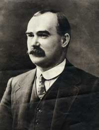

James Connolly (1868 - 1916)
 Born on June 5th 1868 in Edinburgh Scotland to Irish Immigrant parents, James Connolly joined the British Military at age 14 to escape his extreme poverty. Seven years later at the age of 21, Connolly left military life and eventually settled in Dublin in 1896.
In 1903 Connolly emigrated to the United States,living for a brief period in Troy New York with a relative, and worked for an insurance firm as a salesman. But by 1905 he left Troy to persue his ideals of organizing a militant working class movement and soon joined the newly formed IWW ( Industrial Workers of the World ), as a member and full-time organizer. Connolly worked primarily in the New York City / Newark New Jersey area, and was a family friend of Elizabeth Gurley Flynn.
A prolific writer of historical, cultural, political, economic, and social analysis, as well as a one man editor and publisher of his own books and newspaper, many people of opposing political beliefs within the Labor movement and the Left valued and praised Connolly's insightful views.
His most famous book, LABOUR IN IRISH HISTORY, did not limit itself to Ireland, and included analysis of the horrible conditions of the British working class and the need for world-wide working class revolution.
Connolly considered himself a Socialist, but always advocated revolutionary Syndicalism, which he called "Industrial Unionism ", and advocated the political system of a " Cooperative Commonwealth ".
Connolly did not consider himself an Anarcho-Syndicalist, however in 1908 when a split in the IWW occured between the Marxist Daniel De Leon and the Anarcho-Syndicalists, Connolly sided with the Anarcho-Syndicalists. Although De Leon was a major influence on Connolly for many years, he never the less became repulsed over time by De Leon's sectarianism and dogmatism.
De Leon argued for a revolution that involved seizing control of the state by politicians through the election of a Socialist party, and that the role of industrial unions would be to support the party.
Connolly advocated instead for a revolution that gives immediate power to new forms of social organization, a revolution lead by the workers themselves, without being subordinate to any party.
In terms of governance, Connolly advocated a Co-operative Commonwealth. A society in which all productive property is owned in common and managed by democratic Co-operatives, industry by industry,region by region. He wanted all of society to be run and organized democratically for the benefit of all of society.
Connolly hated sectarianism, which he considered one of the greatest obstacles preventing worker anti-capitalist unity. One of his writtings that reflects this beleif ;
The development of the fighting spirit is of more importance than the creation of the theoretically perfect organization. That indeed, the most theoretically perfect organization may, because of it's very perfection and vastness, be of the greatest possible danger to the revolutionary movement if it tends, or is used, to repress and curb the fighting spirit of comradeship in the rank and file.
Connolly also was distrustful of centralized government, best reflected in his statement that ;
Without the power of the industrial union behind it, democracy can only enter the state as the victim enters the gullet of the serpent.
Connolly returned to Ireland in 1910 and became an organizer for the Irish Transport and General Workers Union ( ITGWU ). In 1913 along with Jim Larkin ( a supporter of the IWW who in coming years traveled to America to support Ben Fletcher's IWW Maritme and Dockworkers Union in Philadelphia ), the President of the ITGWU, Connolly organized a general strike in Dublin that paralyzed commerce and transport for many weeks. During the general strike Connolly organized the Irish Citizen Army amongst striking workers, in a self defense response to wide spread beatings of striking workers by the Irish police and British military. The Irish Citizen Army became the nucleus of the Dublin Division of the Army of the Republic during the 1916 Easter Rebellion against British rule of Ireland.
Connolly was badly wounded and imprisioned after the failed Easter Rebellion, and despite his severe wounds, was tied to a chair and executed by the British military on May 12th 1916.
Though considered by many historians to be an " Irish Nationalist ", Connolly did not believe in ignoring class divisions in the name of nationalism. That Ireland could not be free until the working class of Ireland was free.
Connolly never lived to see the failure of the Irish revolution to be a working class revolution, nor the bankrupcy of modern day so called Democratic Socialism or the Labour Party. As likewise with the barbarity of so called " worker's revolutions " in Russia, China, and Pol Pot's Cambodia.
However, Connolly's legacy and his writtings, in particular their pragmatism of the need of industrial unionism and the avoidance of sectarianism, are as relevant today as they were when he wrote them.
Connolly died for his beliefs. Not beleifs based on theory, but instead a lifetime of witnessing thousands of men and women exploited to the edge of despair and starvation by the greed of a few.
We should remember James Connolly with this final quote ;
A revolution will only be achieved when the ordinary people of the world, us, the working class, get up off our knees and take back what is rightfully ours.
Besides Connolly Station, the main railroad terminal in Dublin, another fitting monumnet erected in his memory by Labor and Irish Fraternal groups, was a monument in downtown Troy New York during the 1980's.